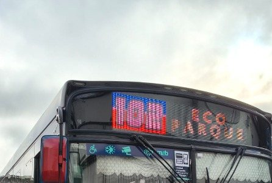
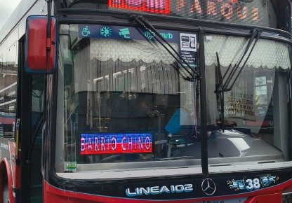
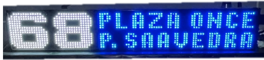
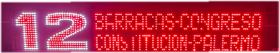
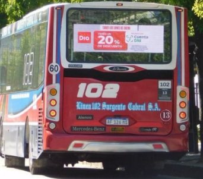
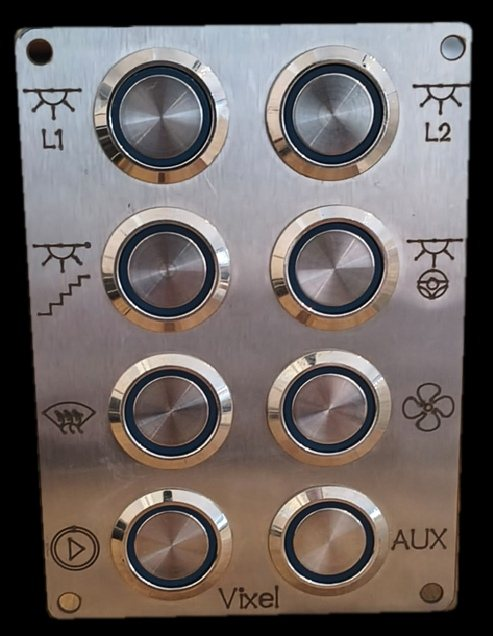

Diseñamos, fabricamos y reparamos pantallas LED para colectivos de línea: carteles frontales, ramaleras y el servicio técnico de carteles tradicionales en toda la flota.
Presentes en las líneas 12 · 39 · 67 · 68 · 102 · 124
Vixel nace hace 5 años con el objetivo de fabricar pantallas LED de calidad para el transporte público.
Empezamos instalando carteles frontales en la Línea 102 y, poco después, sumamos la fabricación de ramaleras. Hoy seguimos creciendo con un mismo objetivo: ser un aliado clave en soluciones tecnológicas para distintas ramas del transporte.
Fabricar y proveer pantallas LED confiables y de alta calidad para el transporte público, acompañando a las empresas de colectivos con soluciones a medida y un servicio técnico cercano.
Consolidarnos como un aliado estratégico en la industria del transporte, ampliando nuestra oferta de soluciones tecnológicas y llevando a Vixel a nuevas líneas y regiones.
Nuestras pantallas se reparan arriba del colectivo: sin desmontar el cartel, sin llevarlo a la carrocería y sin necesidad de paradas de horas o días.
Diseñamos y fabricamos nuestras pantallas, controlando cada etapa del proceso y la calidad final.
Tecnología LED Full Color de alta visibilidad, pensada para el uso intensivo en la vía pública.
Configuración de líneas, destinos e imágenes por WiFi, USB o cable, sin complicaciones.
Acompañamos cada instalación con garantía y soporte técnico ante cualquier eventualidad.
Nuestros equipos circulan en la Línea 102, probados en el uso diario del transporte público.
Fabricación propia, pensada para instalación y uso real en flota de colectivos.

Instalación real — Línea 102, Buenos Aires
Cartel de destino de línea, full color
Ubicada en la parte frontal superior del colectivo, muestra número de línea, destino y recorrido con máxima visibilidad, incluso de día. Totalmente personalizable en textos, colores e imágenes.

Instalación real — Línea 102, Buenos Aires
Cartel inferior de destino
Ubicada en la parte inferior frontal del parabrisas, complementa a la pantalla principal reforzando la identificación del recorrido y destino para los pasajeros en la parada.


Carteles LED tradicionales — placas PCB, LEDs y resistencias
Servicio de reparación en otras líneas
Además de nuestras pantallas LED propias, instaladas en la Línea 102, reparamos carteles LED tradicionales —con placas PCB, LEDs y resistencias— en otras líneas de la flota.
Nuevos productos que estamos desarrollando para ampliar nuestras soluciones.

Publicidad digital para la parte trasera del colectivo
Pantalla LED de alto brillo pensada para publicidad digital en la parte trasera del colectivo, con gestión y actualización de contenido en forma remota y en tiempo real.

Control centralizado de pantallas, luces y calefacción
Panel de pulsadores con relé para comandar, desde la cabina, las pantallas LED, la iluminación interior y el sistema de calefacción del colectivo, todo desde un mismo tablero.
Soluciones de pantallas LED a medida para empresas de transporte público.
Buenos Aires, Argentina